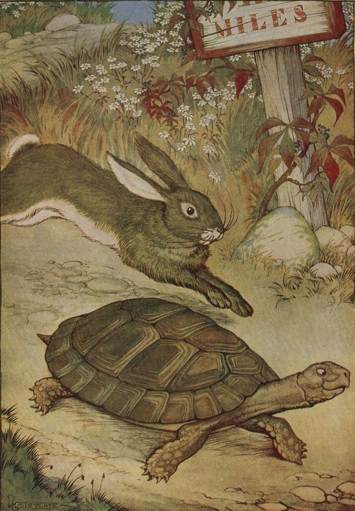

Le Lièvre et la Tortue
Rien ne sert de courir ; il faut partir à point :
Le lièvre et la tortue en sont un témoignage.
Gageons, dit celle-ci, que vous n’atteindrez point
Sitôt que moi ce but. Sitôt ! êtes-vous sage ?
Repartit l’animal léger :
Ma commère, il vous faut purger
Avec quatre grains d’ellébore.
— Sage ou non, je parie encore.
Ainsi fut fait ; et de tous deux
On mit près du but les enjeux.
Savoir quoi, ce n’est pas l’affaire,
Ni de quel juge l’on convint.
Notre lièvre n’avait que quatre pas à faire ;
J’entends de ceux qu’il fait lorsque, près d’être atteint,
Il s’éloigne des chiens, les renvoie aux calendes,
Et leur fait arpenter les landes.
Ayant, dis-je, du temps de reste pour brouter,
Pour dormir, et pour écouter
D’où vient le vent, il laisse la tortue
Aller son train de sénateur.
Elle part, elle s’évertue ;
Elle se hâte avec lenteur.
Lui cependant méprise une telle victoire,
Tient la gageure à peu de gloire,
Croit qu’il y va de son honneur
De partir tard. Il broute, il se repose ;
Il s’amuse à toute autre chose
Qu’à la gageure. À la fin, quand il vit
Que l’autre touchait presque au bout de la carrière,
Il partit comme un trait ; mais les élans qu’il fit
Furent vains : la tortue arriva la première.
Eh bien ! lui cria-t-elle, avais-je pas raison ?
De quoi vous sert votre vitesse ?
Moi l’emporter ! et que serait-ce
Si vous portiez une maison ?